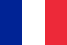

WhatsApp — это популярное приложение для обмена сообщениями, основанное Яном Кумом и Брайаном Актоном в 2009 году. Оба основателя работали в Yahoo! перед тем, как решили создать свой собственный продукт.
WhatsApp — это популярное приложение для обмена сообщениями, основанное Яном Кумом и Брайаном Актоном в 2009 году. Оба основателя работали в Yahoo! перед тем, как решили создать свой собственный продукт.
WhatsApp был разработан для предоставления простого, надежного и доступного способа обмена сообщениями. Одной из ключевых особенностей WhatsApp является то, что он использует номер вашего мобильного телефона в качестве идентификатора, что позволяет легко связываться с людьми из вашей телефонной книги.
WhatsApp быстро стал популярным и к 2014 году имел более 600 миллионов активных пользователей. В том же году Facebook приобрела WhatsApp за примерно 19 миллиардов долларов — это была одна из самых крупных сделок в истории технологической индустрии.
С течением времени WhatsApp добавил новые функции, включая поддержку голосовых и видеозвонков, end-to-end шифрование, а также возможность отправки документов и медиафайлов.
WhatsApp также стал важной платформой для бизнеса, и в 2018 году было запущено приложение WhatsApp Business, предназначенное для малых предприятий.
Viber был основан в Тель-Авиве, Израиль, в 2010 году Талмоном Марко и Игорем Магазинником, друзьями из Израильских оборонительных сил, где они были главными информационными офицерами.
В 2014 году компания Rakuten приобрела Viber Media за $900 миллионов. Эта сделка принесла семье основателей около $500 миллионов. В 2017 году корпоративное имя было изменено на Rakuten Viber, хотя юридическое имя осталось прежним.
С 2017 года Viber начал активно использовать свою платформу для распространения информации о важных общественных вопросах, сотрудничая с такими организациями, как Всемирный фонд дикой природы и Всемирная организация здравоохранения.
В 2020 году, на фоне протестов после выборов в Беларуси, компания закрыла свой офис в Минске..
Skype был создан в 2003 году Никласом Зеннстрёмом, Янусом Фрисом и четырьмя эстонскими разработчиками. Первая версия была выпущена в августе 2003 года. В сентябре 2005 года eBay приобрел Skype за 2,6 миллиарда долларов. В сентябре 2009 года Silver Lake, Andreessen Horowitz и Canada Pension Plan Investment Board купили 65% Skype за 1,9 миллиарда долларов у eBay, оценив бизнес в 2,92 миллиарда долларов. В мае 2011 года Microsoft купил Skype за 8,5 миллиарда долларов и использовал его для замены своего Windows Live Messenger.
Название программы происходит от "Sky peer-to-peer", которое затем было сокращено до "Skyper". Однако некоторые доменные имена, связанные с "Skyper", уже были заняты. Исключение последней "r" оставило текущее название "Skype".
В июне 2005 года Skype заключил соглашение с польским веб-порталом Onet.pl о совместном предложении на польском рынке. В июле 2011 года Skype сотрудничал с Comcast, чтобы предоставить свою услугу видеочата подписчикам Comcast через HDTV1.
17 июня 2013 года Skype выпустил бесплатную услугу видеосообщений, которую можно использовать на Windows, Mac OS, iOS, Android и BlackBerry. Между 2017 и 2020 годами Skype сотрудничал с PayPal, чтобы предоставить функцию отправки денег. Это позволило пользователям переводить средства через мобильное приложение Skype во время разговора1.
В 2019 году Skype был объявлен шестым по популярности мобильным приложением десятилетия, с 2010 по 2019 год. На март 2020 года Skype использовали 100 миллионов человек хотя бы раз в месяц и 40 миллионов человек каждый день. Во время пандемии COVID-19 Skype потерял большую часть своей доли рынка в пользу Zoom. На февраль 2023 года Skype использовали 36 миллионов человек каждый день1.
Snapchat был создан Бобби Мёрфи, Эваном Шпигелем и Реджи Брауном, студентами Стэнфорда. Сначала он был известен под названием "Picaboo" как проект iOS для одного из классов Шпигеля. Однако после того, как Спигель поделился идеей с Брауном и Мёрфи, они совместно создали Snapchat, который был запущен в сентябре 2011 года. В начале 2012 года Реджи Браун покинул компанию из-за разногласий с Шпигелем и Мёрфи.
Быстро набрав популярность, Snapchat продолжал расширяться и улучшать свои возможности. В 2012 году была добавлена функция видео, а в 2013 году - функция "Stories", которая позволяет пользователям делиться снимками и видео, доступными для просмотра в течение 24 часов. Затем в 2014 году была добавлена функция "Chat", а в 2015 году - "Discover", позволяющая пользователям исследовать короткие формы контента от основных издательств и брендов.
В сентябре 2016 года Snapchat впервые представил очки Spectacles, а в декабре того же года компания официально изменила свое название на Snap Inc.
Меню
НовостиИстория соц.сетей:
История мессенджеров: История и рейтинг
Популярные соц.сети в других странах:
 Турция
Турция Египет
Египет
- YouTube
- Snapchat
- TikTok
 Германия
Германия
- Snapchat
- YouTube
 Испания
Испания
- YouTube
 США
США
- YouTube
- Snapchat
- TikTok
- Nextdoor
- Франция
- YouTube
 Китай
Китай
- YouTube
- Snapchat
- TikTok
- Nextdoor